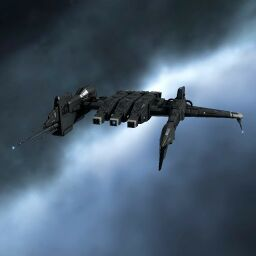

Kestrel

Тип корабля: Фрегат
Государство/Организация: Caldari
Примерная стоимость: 634.000 ISK
Описание
Фрегат типа «Кестрел» проектировался из расчёта на эффективное использование пусковых установок; он оснащён чуть ли не лучшими в галактике системами обнаружения и сопровождения целей. Примечательно, что многие состоятельные торговые корпорации (и даже флот Государства Калдари) используют его в качестве транспортного корабля. Это один из немногих торговых кораблей, обладающих мощным наступательным вооружением, благодаря чему он идеально подходит для авантюрных торговых маршрутов в опасных районах. Проект «Кестрел» предполагает одновременный монтаж вплоть до четырех пусковых установок. Вследствие этого орудийные установки и буровое оборудование установить на «Кестрел» невозможно.
Характеристики
Корпус
Запас прочности корпуса: 400 ед.
Вместимость грузового отсека: 160 м^3
Объем отсека для дронов: -
Пропускная способность канала телеуправления: -
Масса: 1.113.000 кг
Занимает объем: 19.700,0 м^3 (2.500,0 м^3 в разобранном виде)
Влияние инертности конструкции: 3,27x
Сопротивление корпуса ЭМ-урону: 33 %
Сопротивление корпуса термальному урону: 33 %
Сопротивление корпуса кинетическому урону: 33 %
Сопротивление корпуса фугасному урону: 33 %
Броня
Запас прочности брони: 350 ед.
Сопротивление брони ЭМ-урону: 50 %
Сопротивление брони термальному урону: 45 %
Сопротивление брони кинетическому урону: 25 %
Сопротивление брони фугасному урону: 10 %
Щит
Запас прочности щита: 500 ед.
Влияние на время регенерации щитов: 10 минут и 25 секунд
Сопротивление щита ЭМ-урону: 0 %
Сопротивление щита термальному урону: 20 %
Сопротивление щита кинетическому урону: 40 %
Сопротивление щита фугасному урону: 50 %
Сопротивление средствам РЭП
Сопротивление накопителя нейтрализирующему воздействию: 0 %
Сопротивление воздействию генератору стазис-поля: 0 %
Сопротивление воздействию помех на наводку вооружения: 0 %
Накопитель энергии
Емкость накопителя: 330,0 ГДж
Время востановления заряда: 165 с
Целеуказания
Максимальная дальность захвата цели: 50 км
Максимальное количество захваченных целей: 5
Радиус сигнатуры: 38 м
Разрешающая способность систем захвата цели: 620 мм
Эффективность радарной системы: -
Эффективность магнитнометрической системы: -
Эффективность гравиметрической системы: 11 ед.
Эффективность ладарной системы: -
Двигательная установка
Максимальная скорость: 325 м/с
Скорость в варп-режиме: 5,0 а.е./с.
Служба оснащения
Мощность ЦПУ: 180,0 Тф
Мощность реактора: 45 МВт
Калибровка: 400 ед.
Точки монтажа орудийных установок: -
Точки монтажа пусковых установок: 4
Разъемы большой мощности: 4
Разъемы средней мощности: 4
Разъемы малой мощности: 2
Разъемы под установку тюнинг-модулей: 3